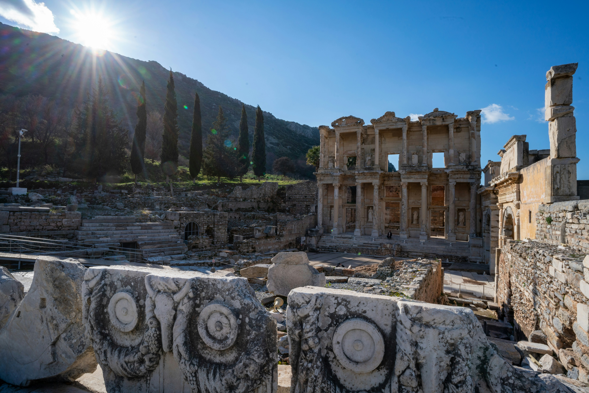
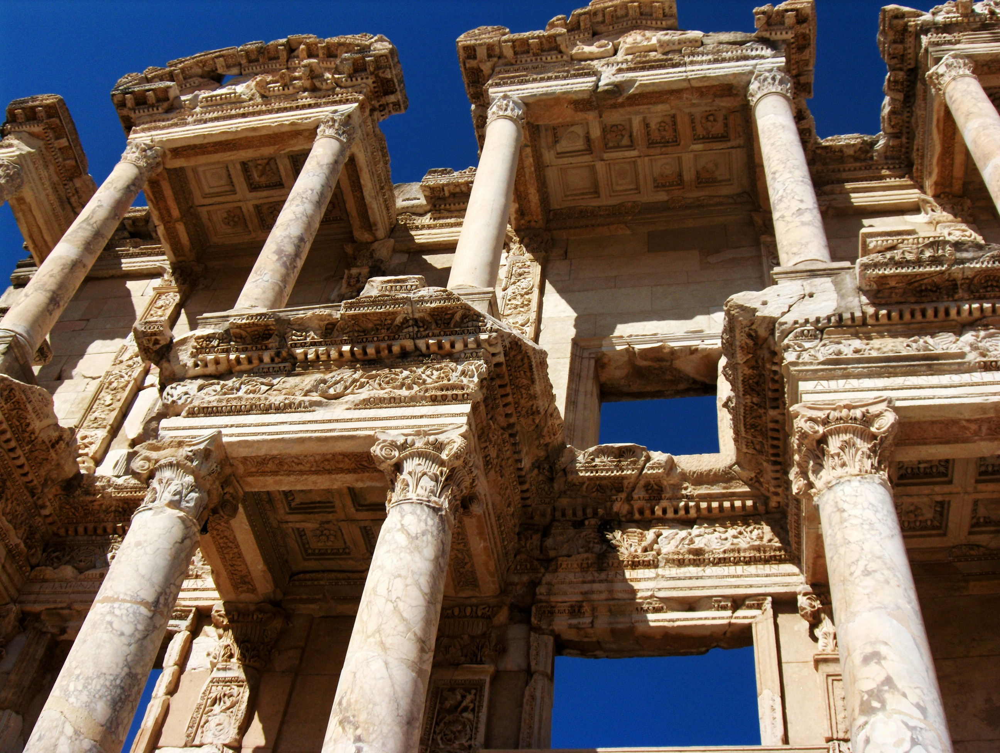
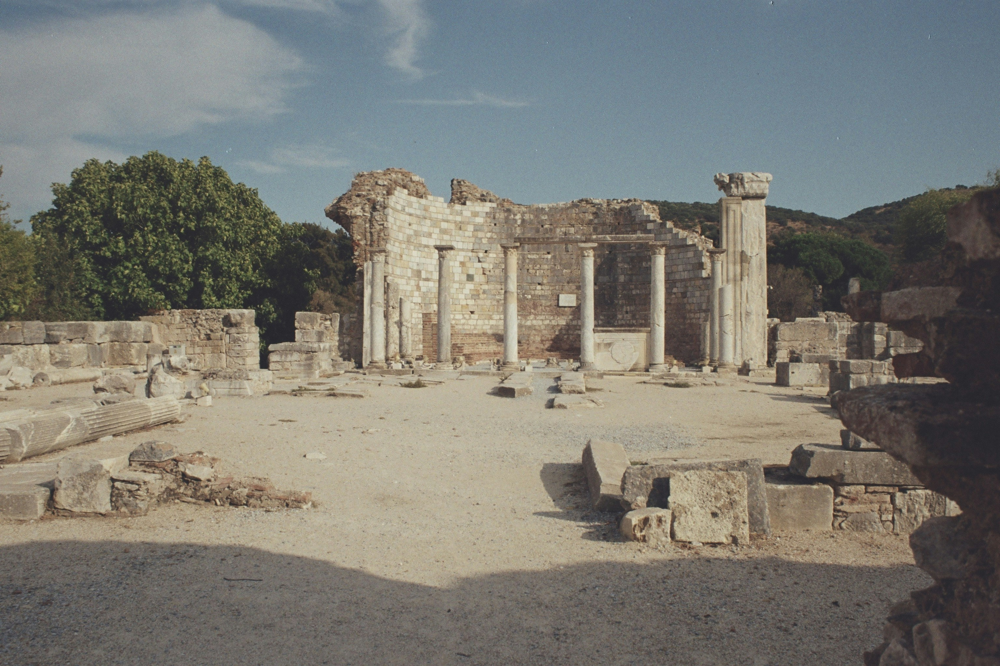
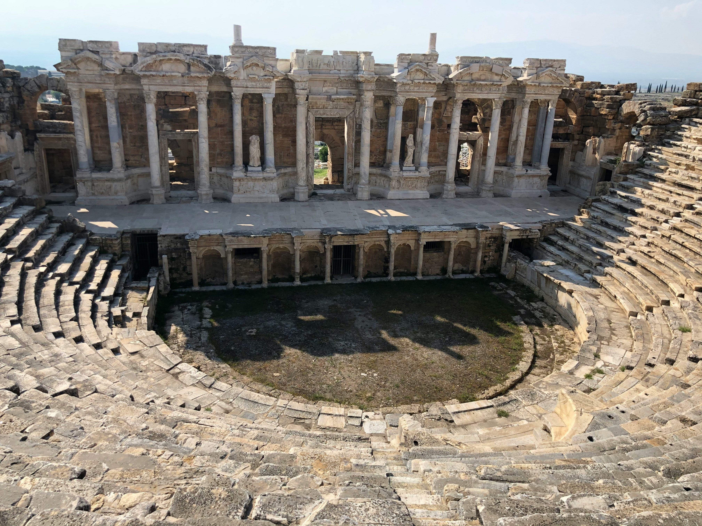

Turchia · 8 Giorni
Le Città
dell'Egeo.
Efeso, Pergamo, Afrodisia, Mileto. Otto giorni tra le città greco-romane che inventarono la civiltà.
Prima di andare
Iscriviti per ricevere in anteprima i nuovi itinerari.
Turchia · 8 Giorni
Efeso, Pergamo, Afrodisia, Mileto. Otto giorni tra le città greco-romane che inventarono la civiltà.
Durata
8 giorni
Gruppo
Max 10
Da
€ 3.600
Stagione
Mar — Giu / Set — Nov
Difficoltà
Facile — Moderato
L'itinerario completo
Arrivo a Izmir e trasferimento a Selçuk. Primo incontro con Efeso nel pomeriggio: la facciata della Biblioteca di Celso appare tra i cipressi come una promessa mantenuta dal II secolo. Passeggiata lungo la Via dei Cureti fino al Grande Teatro, dove venticinquemila spettatori ascoltavano le voci della democrazia. La luce del tramonto scolpisce il marmo come duemila anni fa.

Mattina nelle Case a Terrazza — le ville dei patrizi romani con mosaici, affreschi e sistemi di riscaldamento intatti. Qui la vita quotidiana dell'élite di duemila anni fa diventa tangibile. Pomeriggio sul sito del Tempio di Artemide, una delle Sette Meraviglie del mondo antico: resta una colonna solitaria, ma l'immaginazione completa il resto. Visita al Museo di Efeso a Selçuk.
Trasferimento verso nord lungo la costa egea. Arrivo a Bergama e salita all'Acropoli di Pergamo — la città che sfidò Atene nella cultura e Roma nel potere. Il teatro più vertiginoso dell'antichità scende lungo il pendio come una ferita nella montagna. Pomeriggio all'Asclepeion, il centro di guarigione sacra dove la medicina si intrecciava con la fede. Qui Galeno mosse i primi passi.

Mattina al Museo Archeologico di Bergama, dove i frammenti dell'Altare di Zeus raccontano la battaglia tra dei e giganti. Poi la Basilica Rossa — un tempio egizio dedicato a Serapide, trasformato in chiesa bizantina, una delle Sette Chiese dell'Apocalisse di Giovanni. Pomeriggio libero nel borgo di Bergama: vicoli ottomani, bazar coperto, il profumo del tè nero sui bracieri.
Lungo trasferimento verso sud attraverso l'entroterra anatolico — colline di ulivi, pianure di cotone, villaggi dove il tempo ha un ritmo diverso. Arrivo ad Afrodisia nel tardo pomeriggio. Lo Stadio appare per primo: trentamila posti perfettamente conservati, il più grande e intatto del mondo antico. Poi il Tetrapilo, porta cerimoniale che incornicia il cielo come un quadro di marmo. Cena in un villaggio vicino, sotto le stelle.

Giornata intera dedicata ad Afrodisia, la città di Afrodite. Il Museo, uno dei più belli della Turchia, custodisce sculture di una perfezione che toglie il fiato — la Scuola di Afrodisia era celebre in tutto l'Impero. Il Sebasteion, tempio dedicato agli imperatori, con rilievi che raccontano miti e propaganda in una sintesi unica. Visita agli scavi attivi con l'équipe archeologica: qui la storia si scrive ancora oggi, un frammento alla volta.
Trasferimento verso la costa. Mileto, la città dei filosofi: qui nacquero Talete, Anassimandro, Anassimene — qui il pensiero occidentale cominciò a porsi le domande che ancora ci poniamo. Il Grande Teatro, affacciato sulla pianura dove un tempo c'era il mare. Le Terme di Faustina, tra le più lussuose dell'Asia Minore, con mosaici e vasche che raccontano il piacere romano. Sera sulla costa egea, tra il profumo dei pini e il suono del mare.

Ultima mattina al Tempio di Apollo a Didyma — l'oracolo rivale di Delfi. Colonne alte diciannove metri che sfiorano il cielo egeo, una scalinata sacra che scendeva verso la sorgente dove la Pizia pronunciava i suoi responsi. Un luogo dove il confine tra uomini e dei si assottigliava fino a scomparire. Trasferimento a Izmir e partenza. Un viaggio finisce, ma le pietre continuano a parlare.
Perché questo viaggio
Tre dei teatri antichi meglio conservati del Mediterraneo: Efeso, Pergamo e Mileto. Ogni acustica, ogni gradino racconta un modo diverso di concepire lo spettacolo e la democrazia.
A Pergamo, dove la medicina moderna nacque dalla fede. Il centro di cura dove Galeno studiò, con tunnel sacri, biblioteche mediche e rituali di guarigione che anticiparono la psicoterapia.
Ad Afrodisia gli scavi non si sono mai fermati. Con permessi speciali, visitiamo le aree dove gli archeologi stanno ancora portando alla luce sculture, iscrizioni e storie sepolte da secoli.
Dettagli pratici
Prezzo
A partire da
€ 3.600
per persona, base camera doppia
Il prezzo varia in base alla composizione del gruppo e alla personalizzazione dell'itinerario. Supplemento singola disponibile su richiesta.
Inizia da qui
Rimani aggiornato